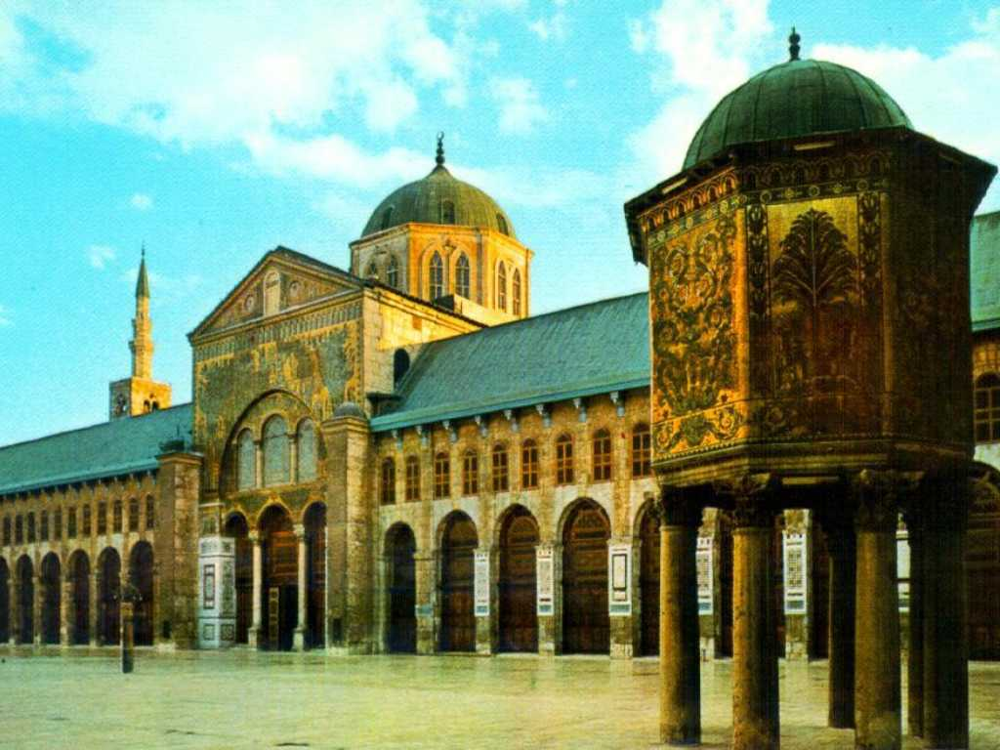
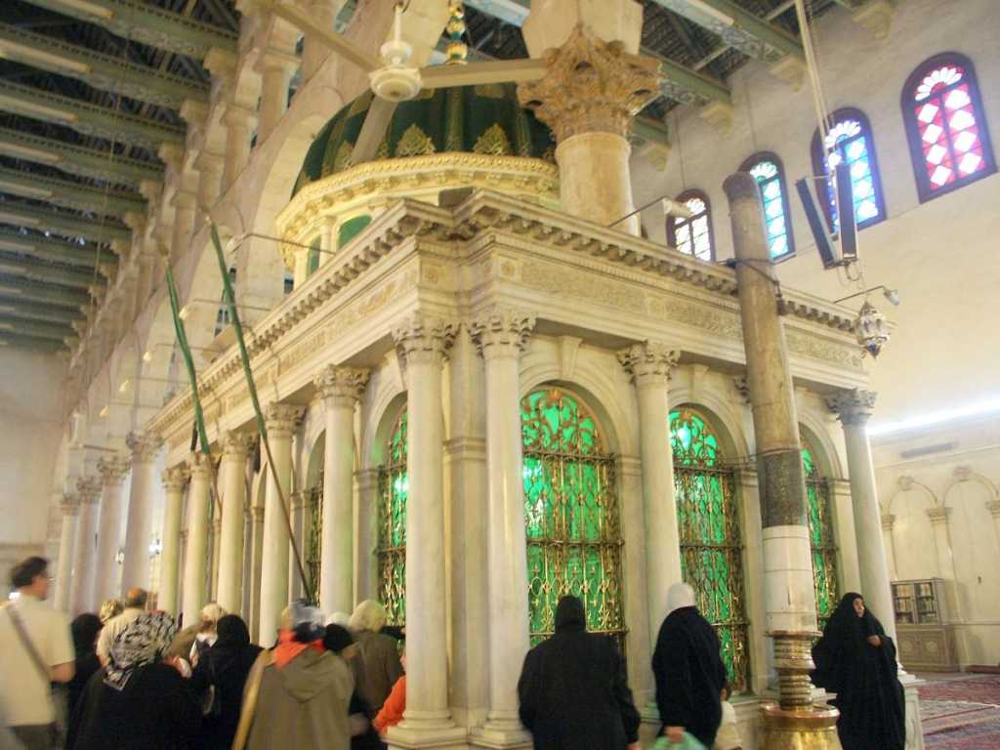

Omayyad mosque Damascus
イスラム教元年(イスラム暦はA.D.622.7.16の太陰暦)より約９０年後の７１５年にビザンチン教会を改修した世界最古のモスクでモハメッドの孫の墓があるイスラム教第４ の聖地でありシーア派最大の聖地でもある またダマスカスはヴァチカンに墓のあるキリスト教の聖ヨハネが布教を開始した地でもありドームを中心に十字の教会が残っており聖ヨハネの首塚が中央に祭られているキリスト教の聖地でもある 従って南を向くとメッカのイスラムモスク東西に長い十字のキリスト教会と複雑な様相を呈している

Saint John mausoleum inside Omayyad mosque
イスラム教５行 シャハーダ サラー ザカート サウム ハッジ 砂漠の民が厳しい環境を生き抜く教えであるザカートとは富者が貧者を助けることを自主ではなく義務としているので将来の約束(契約)より優先するときがある